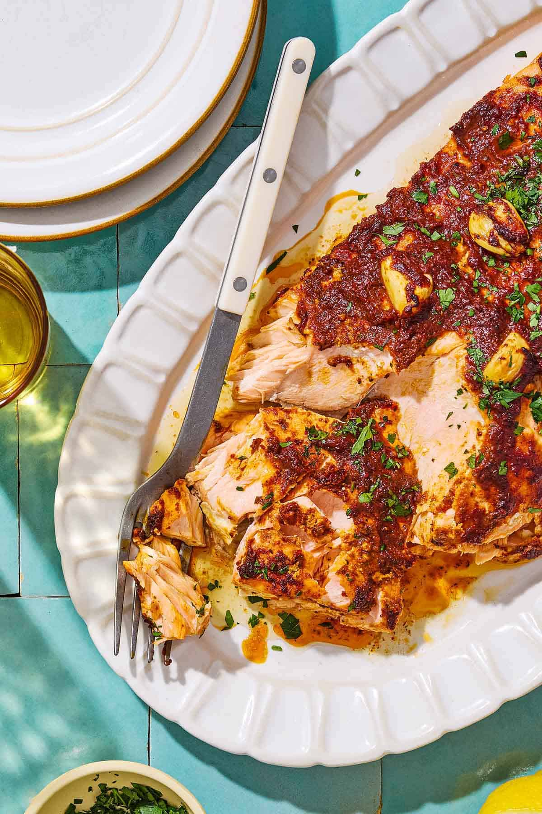

I grew up in an impoverished family working on a rock farm. Every day we grinded up our harvest and ate measy stone stew. Sometimes, we didn't even have that, but every summer there was a great flood that left us with lots and lots of fish. Here's a recipe my family and I personally engineered to our specific tastes.

Turkish-Style Marinated Salmon
Ingredients:
- Salmon
- Olive Oil
- Red Pepper Paste
- Aleppo pepper
- Oregano
- Smoked paprika
- Lemon
- Garlic
- Salt
- Fresh Herbs
Instructions:
Remember to marinate the salmon!
- Bake The Salmon
- Remove the salmon from the fridge
- Preheat oven to 375°F
- Line sheet pan with foil
- Make sure it's long enough to wrap over the salmon
- When oven is hot, place salmon on pan
- Drizzle olive oil then fold foil over
- Bake for 15-20 minutes
- Broil
- Garnish and serve
- Sprinkle with fresh herbs